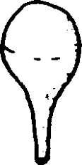

{% set pagetitle = "Cómo succionar el moco de la boca y la nariz del bebé (con una perilla)" %}
{% set seq_length = 4 %}
{% set seq_position = 1 %}
{% set seq_llink = "javascript:;" %} ## set rlink equal to next page href
{% set seq_rlink = "How_to_suction_babys_nose_mouth2.html" %} ## set llink equal to previous page href
{% extends "templates.jinja/base.page-with-sequence.html" %}
{% block title %} Hesperian - Pregnancy & Birth{% endblock %}
{% block id %}How_to_suction1{% endblock %}
{% block content %}

Primero, succione la boca y la garganta hasta que estén libres de moco. Luego, succione la nariz. (Practique usando la perilla para succionar agua antes de utilizarla con el bebé durante el parto).